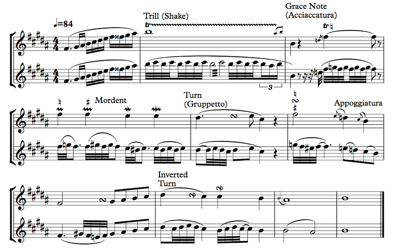

Ornaments are non-essential additions of notes to the melody that make it... prettier? That's a judgment call. It's hard to describe.
That's the big question in music theory, isn't it? What's important; what's less important? But in this case, there are symbols to make our lives easier:
Example 3.9
Have I mentioned how much Sibelius sucks at playback sometimes? So I pulled a little trick: I just made two staves with equivalent music and muted the one with the ornaments themselves so that Sibelius can just do what I tell it to do in the lower staff. Plus, I get to show you what each ornament actually does! One big caveat is that these are kind of standard as of the 19th century, but before then performance practice was all over the place, and people played them every which way. In fact, they would often add ornaments where there weren't any written, just because they were showoffs. Think of ornamentation as adding your own touch to the music. The sheet music tells you what's important, and you pretty it up a bit with these ornaments, which varied by time and place.
We start with the trill, which just means to play the note then rapidly alternate between the note and the note above it. Generally, you do this as quickly as you can, but in the Baroque period (17th century, early 18th century) trills were often meant to be measured. The note you trill to is the note above it in the key, so the B trills to C# because there's a C# in the key signature. You can change this behavior by adding an accidental to the trill. The wavy line is kind of optional; if you have many notes tied together, the wavy line is very helpful at telling you where the trill ends, but for a single note it's not necessary. In Baroque times trills would actually start on the upper note, but that's not the case today; if you want a trill to start on the upper note, you can use a grace note.
Speaking of grace notes, a grace note is a little note in the music that steals time from the surrounding notes. There are two kinds, the acciaccatura (usually what is meant) and the appoggiatura (not so much anymore). The acciaccatura is usually played very quickly before the note it's attached to, and it has a little stroke in it. In some performance practice it actually comes on the beat rather than before. I used these grace notes for the little flourish at the end of the trill, a fairly common way to end a trill. There will often be several grace notes together in a little "rip" figure. Grace notes on drums make a flam (single grace note) or drag (two grace notes).
The appoggiatura, on the other hand, is a full-valued note that takes time from the note it's attached to. So, if you look at the second to last measure of Example 3.9, you can see a half note grace note, and it takes its time away from the whole note that it's attached to. Generally, appoggiaturas are half the value of the note they're on, unless that note has a dot, in which case they're two thirds (so a quarter note appoggiatura attached to a dotted quarter note, for example).
It's very silly, and that's why it's not done anymore. Actually, I have no idea why people ever bothered. But bother they did, so it's good to be able to read what they wrote, I suppose.
After that we have some ornaments that aren't very popular these days, since you might as well just write them as grace notes or write them out. The mordent quickly goes up a note or down a note then comes back. The mordent without a line through it is the upper mordent, and the one with the line is the lower mordent. Or, as they're sometimes known, the mordent and the inverted mordent. Guess which is the normal one and which is the inverted one! Nope, you're wrong. Or right. It depends on time and place, because the word "mordent" has referred to each one of them and not the other at different times and places.
Anyway, the mordent, inverted or not, goes to the next note in the key, so if you want something else, use an accidental. The accidental should go below the lower mordent to signify that it's the lower note that's changing. If you make the wavy line of the mordent a little longer, it means that you go to the next note twice instead of just once; again, without a line it's up, and with a line it's down.
Finally here we have the turn, or gruppetto, which looks like a backwards S on its side. This one has a few different variations. The turn means to go up a note, back to the note, down a note, and back to the note. The inverted turn goes down first. There is no question about that here. The inverted turn can either be a turn with a vertical line or a backwards turn symbol (that goes down first, then up).
The weird thing about the turn is that when this ornament happens depends on placement. If you place it right on the note, you start on the upper note, go to the note, go to the lower, and return to the note to stay there for the duration. If you place it at the end of the note, the figure is basically a set of grace notes before the next note. If it's a dotted note and the turn is in the middle, the figure happens before the dot. It's easier to look at the examples. Again, the neighbor notes are from the key, so if you want to make chromatic alterations you have to use accidentals above and below the turn symbol to specify which notes get changed.
You need to know about trills and grace notes, and that's it. The appoggiatura is a stupid thing in the first place, and the mordents and turns can just be represented by grace notes. In fact, if you're writing music, I highly recommend using grace notes and not these antiquated symbols, because nobody uses them anymore.